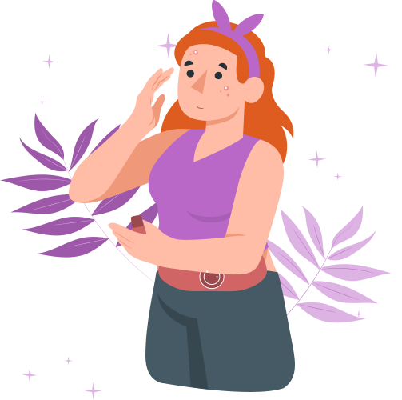
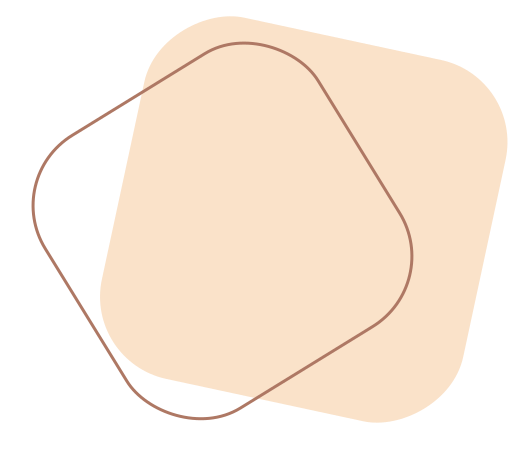
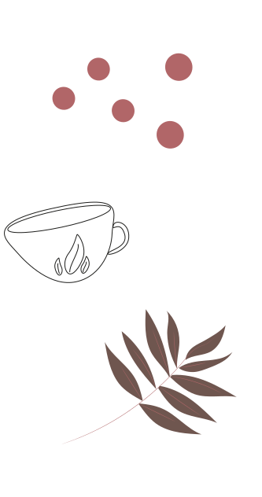
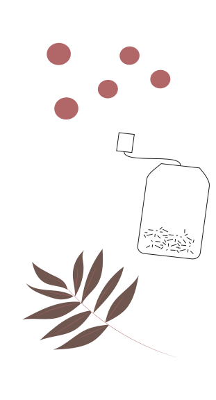
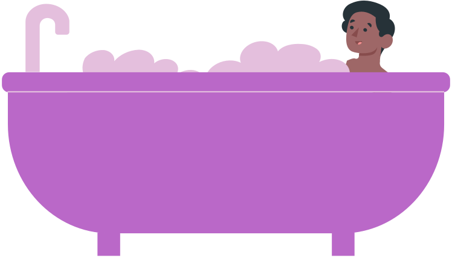
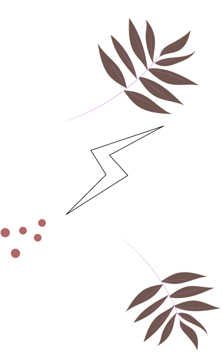
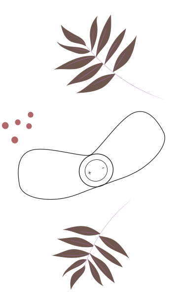

Règles douleureuses
Découvre des remèdes naturels pour calmer tes douleurs pendant tes règles.
 Gummies
Petits bonbons à prendre 7 jours avant le début du cycle qui permet d’avoir un confort avant et pendant celui-ci.
Tu peux renouveler le programme 1 à 3 cycles consécutifs mais avec 1 semaine d’écart entre 2 cures.
Cette cure t’aidera vis à vis de ta digestion, ainsi que la régularisation ton activité hormonale et aide à la relaxation.
Infusion
Plusieurs plantes peuvent être prises sous forme d'infusion, mais attention à ne pas mélanger tout et n’importe quoi.
Voici, les plantes les plus populaires pour calmer les crampes.
Sauge ● Anti-inflammatoire
Recommandé au moment de la puberté comme à la ménopause.
Déconseillé de l’utiliser sur une grande période mais aussi en cas d'hyperoestrogénie ou de cancer du sein ou utérus.
Achillée millefeuille ● Soulage les crampes
Vertus antispasmodiques, inflammatoires et relaxantes.
Feuille de framboisier ● Combat les crampes
Agis mieux si tu en prends quelques jours avant les règles.
Fenouil ● Efficace contre les spasmes
Recommandé de ne pas prendre plus de 7g par jour et ne pas poursuivre le traitement plus de 2 semaines d'affilée.
Valériane ● Soulage les crampes
Conseil en prendre un peu sur plusieurs semaines.
Fonctionne aussi contre les maux de tête.
Gingembre ● Calme les crampes
Peut être consommé autant dans l’eau sous forme de haché ou en infusion. Calme aussi les maux de tête.
Mélisse ● Stimulant
Calme les crampes mais aussi permet de se déstresser et d’être moins irritable.

Thé
Certains thés peuvent soulager les douleurs liées aux règles comme le thé vert ou le thé au gingembre mais attention à ne pas en abuser.
 Prendre un bain
Un bon bain chaud, avec plein de mousse, une petite ambiance cocooning avec des bougies, va te détendre mais aussi soulager tes douleurs liées aux règles.
Et ne t'inquiète pas, l’eau arrête le sang de couler, il n’y a pas de risque de te faire embêter par cela et pas besoin de mettre de tampon non plus.
Bouillotte, coussin chauffant
C’est la solution la plus utilisée et connue chez les femmes qui ont des règles douloureuses.
Grâce à la chaleur qu’elle apporte, elle va détendre tes muscles, combattre et apaiser la douleur. Il suffit de la chauffer ou mettre de l’eau chaude dedans et voilà le tour est joué, plus qu'à la mettre sur ton ventre.
Douleurs intenses ● Tourbe, argile naturelle
Privilégie les bouillottes à base de tourbe ou d’argile naturelle pour soulager tes crampes.
Douleur moins intenses ● Graines de lin ou eau
Les bouillottes contenant des graines de lin ou à base d’eau seront plus favorables.
N’importe quelle douleur ● Électrique
C’est un coussin chauffant portatif, qui est réglables avec plusieurs intensités de chaleur.
Tu as juste à l’attacher autour de ta taille, elle va diffuser la chaleur sur ton ventre. Ainsi, tu as les mains libres, tu peux travailler, faire toutes tes tâches quotidiennes en étant soulagée.
Patch électrode
Soulage les douleurs du bas du ventre.
Grâce au courant électrique à faible tension envoyé, celui-ci calme directement la douleur, s'utilise à tout moment, en plus tu peux faire toutes tes tâches quotidiennes avec car il est discret. Il se colle sur ton ventre et tu n’as plus qu'à faire ta vie.
 Massage aux huiles essentielles
Le massage soulage les maux de ventre.
Tu te mets au calme et tu masses ton ventre avec des huiles essentielles adaptées pendant 5-10 mins en faisant des mouvements circulaires. Tu peux faire une mini pression si tu en ressens le besoin.
Huiles essentielles ● Les plus adaptées
- Huile d’amande douce
- Huile d’onagre
- Huile de jojoba
- Huile de rose
- Huile de noyau d’abricot
- Huile de calendula
- Huile de CBD
Huiles essentielles ● antispasmodiques et inflammatoires.
- Huile essentielle d’estragon
- Huile essentielle de sauge sclarée
- Huile essentielle d’anis verte
- Huile essentielle basilic tropical
- Huile essentielle ylang ylang
- Huile essentielle camomille romaine
- Huile essentielle lavande fine

Faire du sport
Contrairement aux préjugés que l’on peut avoir vis à vis du sport pendant les règles, il s’avère que faire des exercices qui ne sont pas trop intenses, comme la marche, le vélo ou encore la natation permet de calmer tes crampes.